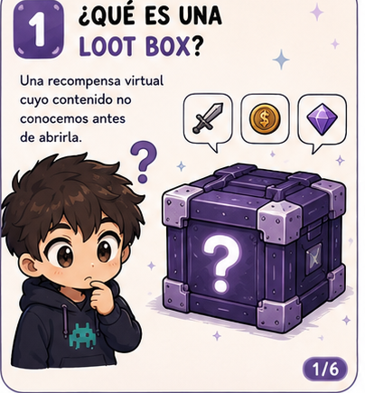
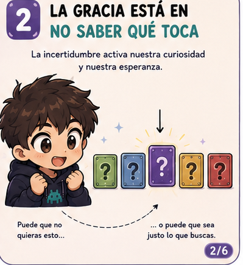
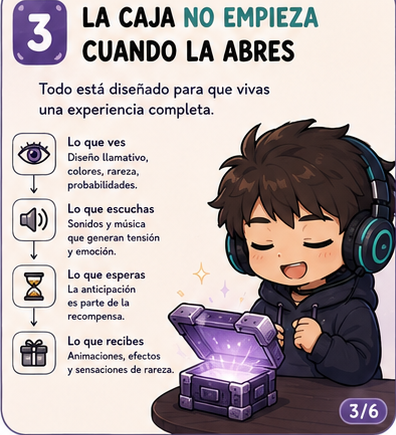
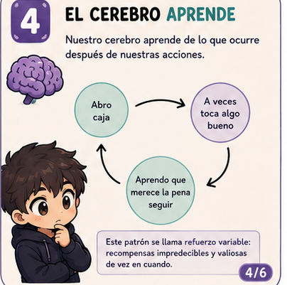
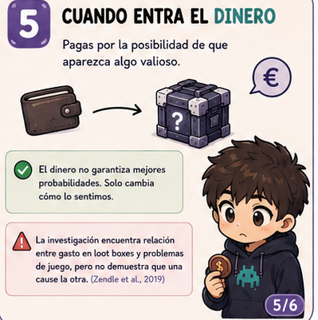
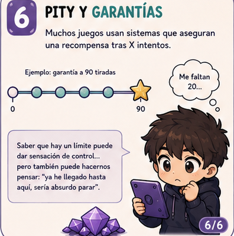

La clave no está solo en lo que recibes
Cuando hablamos de loot boxes solemos pensar en la recompensa final. Pero la experiencia empieza bastante antes: en el momento en que aparece la oportunidad de abrir una caja, vemos sus efectos, escuchamos el sonido y pensamos en qué podría tocar. Esta guía recorre el mecanismo completo, de la psicología al marco legal, para que puedas mirar estas mecánicas con más criterio.

¿Qué es una loot box?
Una loot box es una recompensa virtual cuyo contenido no conocemos antes de abrirla. Puede conseguirse jugando, mediante eventos o, en muchos títulos, comprándose con dinero real o con una moneda virtual que hemos adquirido.
La característica importante para entender su funcionamiento psicológico es sencilla: pagas o inviertes recursos sin saber exactamente qué vas a recibir.
Existen variantes: cajas gratuitas que se ganan jugando, cajas de pago directo, sistemas de "gacha" (habituales en juegos móviles), cofres de temporada o pases de batalla con tramos aleatorios. El envoltorio cambia, pero la mecánica de fondo —pagar por una probabilidad— es la misma en todos los casos.

La gracia está en no saber qué toca
Si supiéramos de antemano que dentro hay exactamente el objeto que queremos, la experiencia sería diferente. La incertidumbre introduce curiosidad y anticipación.

La caja no empieza cuando la abres
Muchos juegos convierten la apertura en una pequeña puesta en escena. Antes de conocer la recompensa pueden aparecer animaciones, destellos, sonidos, música, rarezas, probabilidades o una cuenta atrás.

El cerebro aprende de lo que ocurre después
Imagina esta secuencia: abres una caja, algunas veces aparece algo que te gusta y otras veces no. Cuando la recompensa es impredecible, el aprendizaje no desaparece simplemente porque haya aperturas malas.

Cuando entra el dinero
Aquí cambia una parte importante del problema. El jugador ya no está invirtiendo solo tiempo: puede estar pagando por la posibilidad de que aparezca algo valioso.
La conversión de dinero real en moneda virtual (gemas, créditos, gold...) también cumple una función psicológica: al alejar el pago del gesto de sacar la tarjeta, es más fácil perder la cuenta de cuánto se ha gastado realmente.

Pity y garantías
Algunos juegos introducen sistemas de pity o garantía: si no obtienes una recompensa determinada después de X intentos, el juego asegura que aparecerá.
Saber que existe un límite puede producir una sensación de control y hacer que el jugador piense: “ya he llegado hasta aquí; sería una pena parar ahora”.
Señales de alerta
No todo el mundo que abre loot boxes desarrolla un problema. Pero hay señales que, si aparecen juntas o se repiten, merece la pena tomarse en serio.
¿Qué dice la ley?
No existe un consenso internacional sobre si las loot boxes deben tratarse como juego de azar. Cada país ha tomado un camino distinto, y la situación sigue cambiando.
Consejos prácticos
No hace falta dejar de jugar para tener una relación más sana con las loot boxes. Estas son algunas ideas que suelen ayudar.
Si eres quien juega
- Fíjate un presupuesto antes de abrir cualquier caja, no después.
- Mira las probabilidades publicadas antes de gastar (muchos juegos ya las muestran).
- Desactiva el guardado de tarjeta para que cada compra requiera un paso extra.
- Pregúntate si seguirías abriendo si no hubiera animación ni sonido.
Si acompañas a un menor
- Revisa juntos qué juegos incluyen loot boxes y cómo funcionan sus probabilidades.
- Configura controles parentales y límites de gasto en la cuenta del dispositivo.
- Habla de estas mecánicas con curiosidad, no solo con prohibición.
- Observa cambios de humor asociados a "rachas malas" al abrir cajas.
Preguntas frecuentes
¿Las loot boxes son juego de azar?
Depende del país. Comparten elementos con el juego de azar (pagar por un resultado incierto), pero legalmente solo algunos estados las tratan como tal, normalmente cuando el premio puede convertirse en dinero o revenderse fuera del juego.
¿Abrir loot boxes significa que tengo un problema?
No necesariamente. Muchas personas las abren de forma ocasional sin que interfiera en su vida diaria. El problema aparece cuando compromete el dinero, el tiempo o el estado de ánimo de forma sostenida.
¿Los sistemas pity hacen que sea menos arriesgado?
Reducen la incertidumbre sobre el resultado final, pero no eliminan el patrón de refuerzo variable que ocurre en cada intento anterior a la garantía.
¿Qué puedo hacer si creo que estoy gastando más de la cuenta?
Empieza por registrar durante una semana cuánto gastas realmente. Después, pon límites técnicos (desactivar tarjeta guardada, controles de gasto) y, si el patrón no cambia, busca apoyo profesional: no es un fallo de fuerza de voluntad, es una mecánica diseñada para ser difícil de soltar.
¿Qué dice la investigación?
La evidencia disponible ha encontrado asociaciones entre el gasto en loot boxes y medidas de juego problemático. Por ejemplo, Zendle y Cairns encontraron una relación entre el gasto en loot boxes y la gravedad del juego problemático, y una replicación posterior volvió a observar una asociación similar. Un tercer estudio del mismo equipo observó que esa relación se mantenía con independencia de características concretas del sistema, como poder retirar el contenido o si la loot box daba ventaja competitiva.
Esto no significa que abrir una loot box provoque automáticamente un trastorno. La dirección de la relación y los factores que explican esas asociaciones son cuestiones que la investigación sigue estudiando: es posible que las personas con más dificultades previas gasten más en loot boxes, que el gasto en loot boxes favorezca esas dificultades, o que ambas cosas se retroalimenten.
- Zendle, D. & Cairns, P. (2018). Video game loot boxes are linked to problem gambling: Results of a large-scale survey. PLOS ONE.
- Zendle, D. & Cairns, P. (2019). Loot boxes are again linked to problem gambling: Results of a replication study. PLOS ONE.
- Zendle, D., Cairns, P., Barnett, H. & McCall, C. (2020). Paying for loot boxes is linked to problem gambling, regardless of specific features like cash-out and pay-to-win. Computers in Human Behavior.
No se trata de demonizar los videojuegos.
Se trata de entender qué hay detrás de las mecánicas que usamos, qué nos hace seguir jugando y cuándo una decisión que parece pequeña empieza a generar problemas.
¿Te interesa la psicología detrás de los videojuegos y la tecnología?